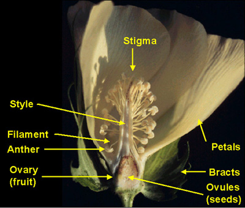
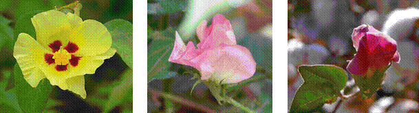
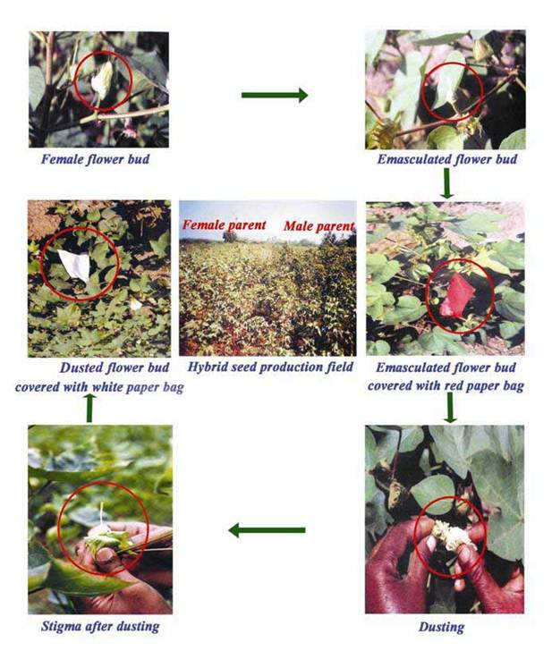
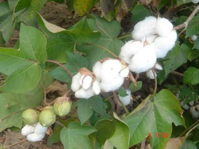
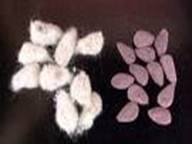
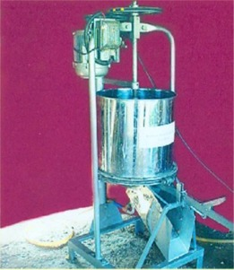

GPBR 112 :: Lecture 14 :: SEED PRODUCTION IN COTTON VARIETIES AND HYBRIDS

Cotton botanically as Gossypium sp. is a fibre yielding crop. It is known as the queen of fiber crops. It serves as a cash crop to the farmer as the lint serves as the raw material for the textile industry .The seed is used both for multiplication and as animal feed.The success of commercial crop depends on the quality of the basic seed.
Floral biology
Simple, solitary, terminal, extra axillary, petals yellow to cream in colour, hermaphrodite, bracteoles called as epicalyx, three in number, free and deeply serrated and persistent at the base of the flower. Nectary gland is present on each bracteole. Calyx five, united, cup shaped corolla five, polypetalous, a purple spot is present on the inner side of the claw of the petal (petal spot) in some species. Androecium forming a staminal column (monadelphous) bearing numerous anthers. Ovary superior penta carpellary, style slender, passes through staminal column with three to five lobed stigma, ovules many in axile placentation.

There is much variation in case of flower opening. Asiatic cotton opens between 8 and 10. a.m. American cotton opens much earlier. Temperature affects the flower opening. After flower opening the cream yellow colour of corolla turns pink within a day and later changes to red. The receptivity of the stigma is 8 to 10 a.m.

Cotton is an often cross-pollinated crop where the extend of cross-pollination is > 60%. In cotton 4 different species are in popular usage, viz. G. arboreum (eg. K 10) G. herbaceum (e.g. Uppam) G. hirsutum (e.g. MCU varieties) and G. barbadense (e.g. Suvin and Suguna).
Method of Seed Production
Varieties: Under isolation, by open pollination, the varieties are multiplied. For nucleus seed production, selfing of flowers is done with cotton (lint) dipped in clay or red earth.
Hybrids: In cotton both inter and intraspecific hybrids are available.
Interspecific Hybrid :
Varalakshmi : Lakshmi x SB298 E (G. hirsutum x G. barbadense)
DCH 32 / Jayalakshmi : DS 28 x SB 425 (G. hirsutum x G. barbadense)
TCHB213 : TCH 1218 x TCB 209
Intraspecific hybrid : Suguna, Savitha (T7 x M12)
Tool employed for hybrid
The hybrid seed production in cotton is achieved through emasculation and dusting technique, which is the physical removal of male organ (staminal column) from the female parent.
- Emasculation and dusting
At the time of flower initiation in female line, the flowers that are going to open next day are selected and the petals are removed between 3-6 pm. With the help of nail or needle, the total staminal (pollen + anther + anther tube) column are removed. Then the flowers are covered with a definite colour cover for easy identification of the emasculated flowers. In the morning between 9 am -12 noon, which is the anthesis time, the flowers of selected male parent are plugged and dusted on the stigma of the emasculated flower on opening the cover. It is again covered with different coloured cover to avoid pollination with other pollen and to identify the emasculated and dusted flower from the rest. The pollen from a single flower is enough to dust 4-5 female flowers. The pollen receptivity of the stigma is for 46 hours.
For easy identification of selfed boll from emasculated and dusted boll the bract can be removed while emasculating owing to the little contribution of bract to seed set and seed yield.

Particulars of varieties/hybrids
Varieties |
Parentage |
Season |
Irrigated / Rainfed |
Seed yield (kg/ha) |
Varieties |
||||
MCU 5 |
Multiple cross |
Aug- January |
Irrigated |
1850 |
MCU7 |
X ray irradiation of x L 1143 EE |
Jan- Feb. to May - June(summer) |
Irrigated (Rice fallows) |
1330 |
MCU 11 |
MCU 5 x Egyptian hirsutum hybrid derivative |
Aug - September |
Irrigated |
2200 |
LRA 5166 |
Laxmi x Reba B.50 x AC 122 |
Sep-October to Jan - February |
Rainfed |
725 |
K10 |
K9 x 11876 hybrid derivative |
Sep-October to Jan - February |
Rainfed |
726 |
K11 |
(0794-1-DX 11876) x (0794-D x 11450) Multiple Hybrid derivative |
Oct- March |
Rainfed |
1100 |
SVPR 1 |
MCU 7 x AC 129/2 |
February - July |
Summer - Irrigated |
15-16 Qtl. Of kapas /ha |
Hybrids |
||||
Suvin |
Hyrbid derivative from the cross Sujatha x St.Vincent |
Aug - February |
Irrigated |
1020 |
Jalyalaxmi |
Interspecific hybird of DS 28 G. hirsutum x SB 425 (VF) G. barbadense |
Aug-February |
Irrigated |
2880 |
TCHB 213 |
Interspecific hybird of TCH 1218 G. hirsutum x TCB 209 G. barbadense |
Aug-February |
Irrigated |
2215 |
Savitha |
T7 x M 12 (Intra hirsutum hybrid) |
Aug-February |
Irrigated |
1800 |
HB 224 |
It is an interspecific hybrid involving |
Aug-February |
Irrigated |
2000 |
Steps in hybridizing technique
- Emasculate and dust as far as possible buds appearing during the first six weeks of reproduction phase to ensure good setting and development of bolls.
- Restrict your emasculation each day evening from 3 pm to 6 pm and pollination in morning between 9-12 noon to ensure highest purity of hybrid seeds. Emasculation should be complete and perfect.
- Choose optimum size of bud and avoid young or too old buds for emasculation.
- Cover the male buds with paper bags, previous evening for their use next day.
- Emasculated buds may be covered preferably with butter papers.
- Do not forget to tie a thread to the pedicel of the bud immediately after pollination.
- Close your crossing programme after 9th week (from commencement of crossing) and remove all buds and flowers appearing subsequently to facilitate the development of crossed bolls.
- Nip the top and side shoots to stop further vertical and horizontal growth.
- Light irritations should be given as and when required. Excessive or scanty or inadequate irrigations should be avoided especially during crossing and boll development period.
- Continue irrigation till last picking of the crossed bolls. Frequency of irrigation depends on weather factors like rainfall, temperature and wind velocity.
- Pick up the ripe and completely opened bolls along with threads and collect in baskets for second sorting. Bolls without threads may be bulk harvested as female seed cotton.
- Crossed bolls collected in baskets may be sorted out for second time to verify that they are crossed bolls. Then collect the crossed seed cotton and store in gunny bags carefully marked as crossed bolls.
- Rain touch cotton or hard locks be picked and kept separately to avoid poor germination of hybrid seeds.
- Store the crossed seed cotton in a cool dry place till it is handed over to processing unit.
Use of Genetic male sterility
Hybrids are also produced by employing genetic male sterility system in cotton, where the female parent will segregate into 50:50 ratio of male sterile and male fertile plants. The male fertile plants are removed and the male sterile plants are crossed with concerned male line.
E.g. Suguna: Gregg x K 3400
Land requirement
The field should be fertile and formed into ridges and furrows. Black cotton soils are highly preferable than other soils. Land should be free from volunteer plants and designated diseases especially the wilt disease.
Season
Winter crop : Aug - Sep
Summer crop : Feb - March
Seeds and Sowing
Seeds should be obtained from an authenticated source with tag and bill.
Pre-sowing management
The seeds can be hardened with 1% prosopis and pungam leaf extract for rainfed/summer sowing to resist water stress problem.Use of delinted seed is better than fuzzy seed to avoid diseased and injured seed.
Seed rate
Varieties : 15 kg/ha (fuzzy seed) 7.5 kg/ha (delinted seed)
Hybrids : 3.75 kg/ha (Jayalakshmi), 1 kg (TCHB 213)
Male : 2 kg /ha and Female 4 kg /ha.
Seed treatment
Treat the seeds with azospirillum at 3 packets (600 g/ha) and 2 kg of azospirillum / ha mixed with 25 kg of FYM and 25 kg of soil and applied on the seed line. This saves 25 % nitrogen besides increasing yield.
Spacing – Varieties Hybrids
1. Long duration :90 x 30 cm ♀ : 120 x 60 cm
2. Short duration :60 x 30 cm ♂ : 90 x 60 cm
Hybrids - Planting ratio
8:2 but here it is block system where flowers of 2 parts of male is sufficient to dust 8 parts of female parent.
Isolation (m)
Foundation seed Certified seed
Varieties 50 30
Hybrids 50 30
Manures and fertilizers
Compost : 12.5 tons/ha
Total : 100:50:25 NPK kg/ha
Basal : 50:50:25 NPK kg/ha
Top dressing : 25:0:0 NPK kg/ha
(40-45 days after sowing)
25:0:0 NPK kg/ha (70-75 days after sowing)
Foliar spray
Spray DAP 2% (for female parents, spray on 60,70,80 and 90th days after sowing. (Soak 5 kg of DAP in 25 liters of water over night and supernatant liquid should be taken and mixed with 475 liters of water for spraying 1 hectare).
Micronutrient application
Mix 12.5 kg of micronutrient mixture formulated by the Department of Agriculture Tamil Nadu with enough sand to make a total quantity of 50 kg for one hectare.
NAA application
Spray 40 ppm of NAA (40 mg of NAA dissolved in 1 liter of water) at 40 / 45th day using high volume spray liquid in 1125 liter /ha. Repeat the same dose after 15 days of first spray.
Topping
Topping arrests terminal growth by nipping the terminal 10-12th node for controlling excessive vegetative growth.
Rouging
The crop should be rouged for off types, selfed plants, from vegetative phase to harvest phase depending on plant stature, leaf size, leaf colour, hairiness, stem colour, flower colour, petal spot, pollen colour, number of sympodia, boll size, boll shape, pittedness etc. to maintain genetic purity.
Field standards
Maximum permitted (%)
Foundation seed Certified seed
Varieties Hybrids Varieties Hybrids
Off types 0.1 0.1 0.2 0.5
Irrigation management
Once in 10 days. Critical periods are boll formation to boll maturation stages.
Specific problems
Boll shedding will occur either due to extreme dry climate or lesser frequency of irrigation or physiological disorder.
By spraying 40 ppm of NAA and cycocel at 20ppm, this can be minimized.
Harvesting
- The seed attains physiological maturation 45 days after anthesis.
- The initiations of hair line cracks on the dried bolls are the physical symptoms of physiological maturation.
- At that time, the moisture content will be 30-35%.
- The bolls are harvested as pickings in cotton.
- Due to continuous flowering habit once over harvest is not practiced.
- As and when the bolls burst with hairline cracks the bolls are collected and dried.
- Normally five to seven pickings can be practiced in a crop.
- But early 4-5 pickings are recommended for seed purpose.
- Harvest in the morning hours upto 10 to 11 a.m. only when there is moisture so that dry leaves and bracts do not stick to the kapas and lower the market value.
- Pick kapas from well burst bolls only.

- Remove only the kapas from the bolls and leave the bracts on the plants.
- As kapas is picked, sort out good puffy ones and keep separately.
- Keep stained, discoloured and insect attacked kapas separately.
Kapas sorting
Kapas is sorted manually to pick good quality seeds. Hard locks are to be removed (Kapas without proper bursting and lint is light yellow in colour), since these kapas mostly result in poor quality seeds, due to boll worm or other insect attack.
Skewed bolls or ill filled or nonviable seeds are formed if stigmatic lobes are not pollinated.
Ginning and certification
- Gin the crossed kapas in separate gins erected in authorized seed processing units or farm gins under the close supervision of the authorities concerned to ensure purity and avoid seed damage.
- Sieve the seed in two types of mesh to remove small, shrivelled seeds, broken seeds and clean perfectly from any dirt or dust.
- After ginning, the seeds should be dried well and cleaned by hand picking. After cleaning, certification agency will take sample for testing germination and genetic purity test. Minimum germination 65% and genetic purity 90% should be maintained.
- Certified seeds would be bagged in one kg bag, sealed and details regarding its origin, germination, physical purity per cent and genetical purity percent, besides season of production are passed on to sale agencies or respective producers for commercial sale.
- Uncertified seeds would be procured by the concerned Department or Agency at the market rate for the ordinary cotton seeds for further multiplication. This step is essential to avoid unauthorised sale of substandard uncertified seed.
Processing
The ginned seeds (or) the fuzzy seeds are graded by hand picking and by pressing on wire-mesh sieves to remove the under sized seeds and dust.

Acid delinting
- Fuzzy seeds will clog with one another. So for easy handling the seeds are delinted using H2SO4 @ 100 ml/kg of seed for 2-3 minutes.
- After acid treatment, the seed should be washed thoroughly for 3 to 4 times with fresh water.
- From the floaters, mature seeds without any visible damage can be picked and added to the sinkers.
Acid delinting machine

Procedure
Weighed quantity of fuzzy seeds is taken in a plastic container and required quantity of the acid is added. Stir well with wooden rod till a shiny black colour appears (Tar like) wash with more of water (5-6 times) and shade dry the seed to reduce the moisture content to 12% before further handling.
Processing of delinted seed
The free flowing delinted seeds can be graded using 10/64" round perforated metal sieve, which is recommended as standard sieve in OSAW cleaner cum grader for cotton.
The seed can also be graded by specific gravity method by using floatation technique using water. The seeds will separate into floaters and sinkers. The sinkers are good seeds. From floaters, reddish (immature) and damaged (seed with insect hole) are removed. The brownish seeds which are good seeds are hand picked and used for sowing.
Seed standards
Characters |
Foundation seed |
Certified seed |
Physical purity % (min) |
98 |
98 |
Inert Matter % (max) |
2.0 |
2.0 |
Other crop seeds (max) |
5 kg-1 |
10 kg-1 |
Weed seeds (max) |
5 kg-1 |
10 kg-1 |
Genetic purity (%) |
100 |
100 |
Germination (min) % ( variety) |
65 |
65 |
Germination (min) % ( hybrid) |
75 |
75 |
Moisture content (max) % |
|
|
a. Moisture pervious |
10 |
10 |
b. Moisture vapour proof |
6 |
6 |
Seed storage
The seeds can be stored upto 8-9 months in moisture pervious container and upto 12-15 months in moisture vapour proof containers.
The seed treatment with thiram @ 2.5 kg-1 or chlorine based halogen mixture @ 3g kg-1 will protect the seed from storage fungi Aspergillus spp and preserve the storability.
Mid storage correction
- The fuzzy and delinted seeds can be soaked in double the volume of 10-4 molar solution of Na2HPO4 for 2 and 1 hr respectively ( 3.59 g / 100 l of water.)
- Then the seeds are shade and sun dried to bring back to the moisture content of 10-12%. The mid storage correction improves the planting value of old seeds.
- Dead seeds may be removed by soaking acid delinted cotton seeds in monolayer for 3 h and drying back to original moisture content.
The seeds when put into potable water will separate into sinkers and floaters. Dead seeds become buoyant and float.
| Download this lecture as PDF here |